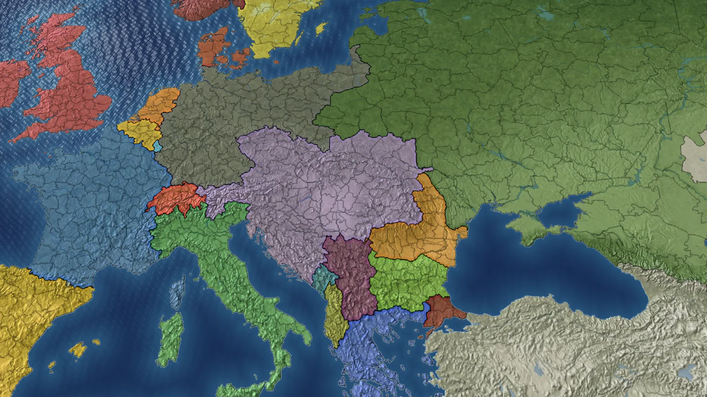
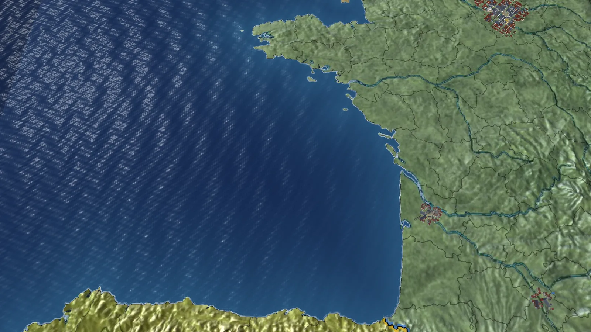
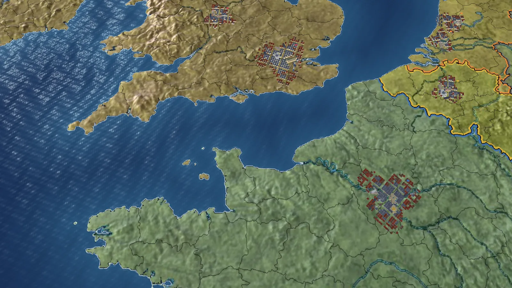
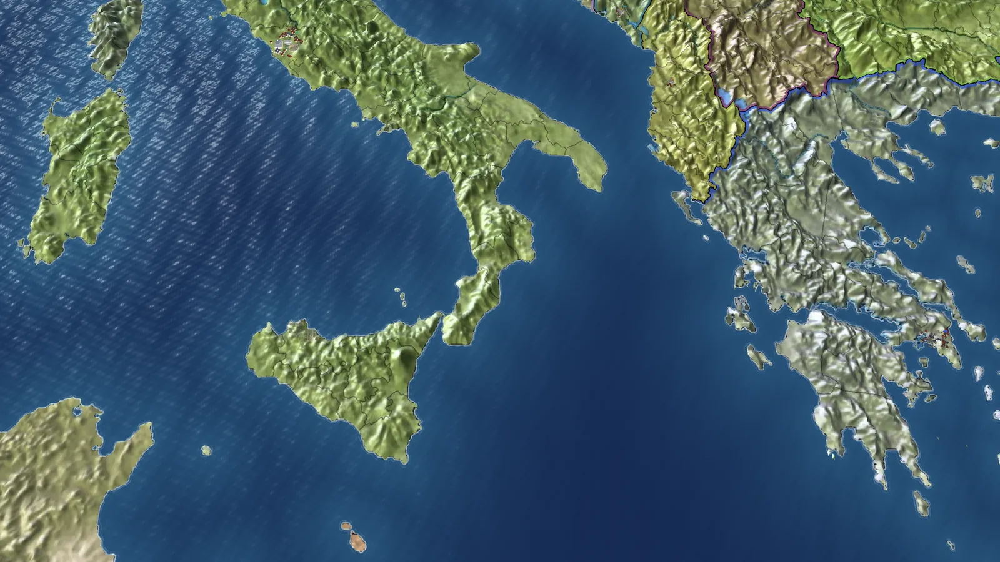
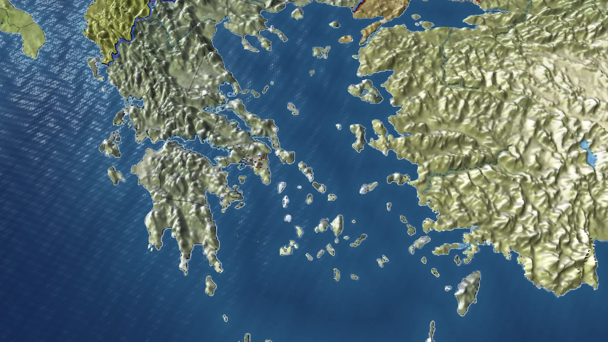

Your effort compounds
Peace is a full way to play. Build, invest, and watch it pay back; fight only when the story calls for it. There is no end date and no score.
Grow
Buildings pay back within years, and what they earn pays for the next round. One province can become the largest economy in the world.
See it
Every lever shows its effect within a year, in a number, a ranking, the map or the news.
Understand it
Every number says why it is what it is, and every choice says what it will do before you make it.
Choose
An army costs what growth would have bought. You cannot have everything at once, but you can have anything eventually.
From the field
Plates from the 3D map, shot in the real game. No interface, only the map.




Take command
Free Windows build, new releases with every update. 22 nations, January 1900 or July 1914.
Download for Windows